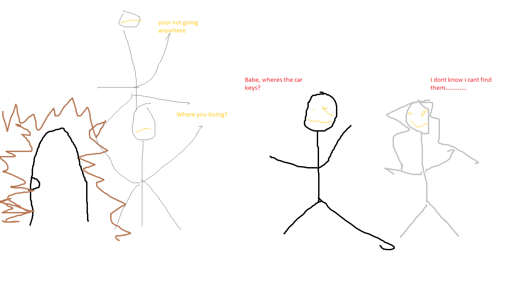
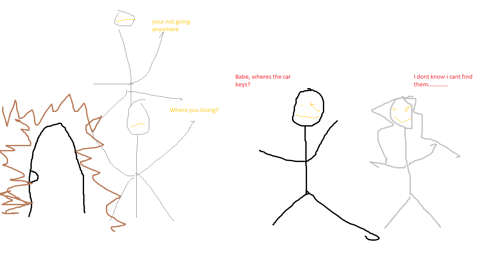

This man is brung into his girlfiends family for a crazy purpose.
Can he escape ?
I decided to see this film at the theater after hearing some of the hype which was basically that it is an excellent horror film that is told from the shoes of a black man. Well, I can see this would be truly the worst nightmare of a black man (getting kidnapped by a white family if you are a black man is a nightmare). This is NOT a film that tries to make the viewer feel "sorry" for black people, but it is just a great horror film with a fresh new setting. The acting is wonderful, and the way the movie is directed is amazing. The film, while mostly horror, is actually completely hilarious in some parts making it the funniest AND scariest movie I have seen ever. The black man is the main character in the movie. In summary, this is a MUST SEE at the theater and one of the best films of the year.